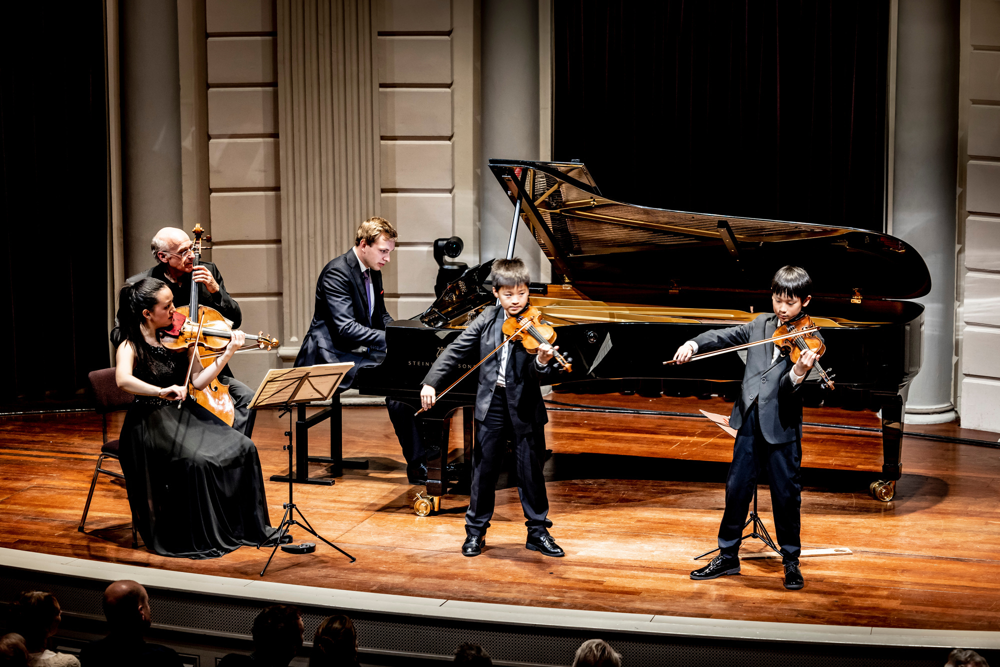

01
Concertreeks
Intieme klassieke concerten op bijzondere locaties in Nederland en België.
Ontdek de concerten →
02
Academy
Coaching en een tournee langs Europa's grote podia, voor de volgende generatie musici.
Naar de Academy →